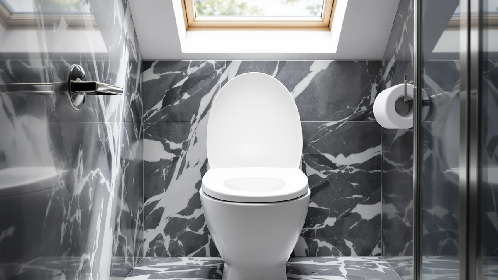

KHE Raised Toilet Seat Review (2026): Worth It?
Prices and picks verified as of November 2026. Independent, reader-supported reviews.


Quick Answer
This khe raised toilet seat review compares the KHE Raised Toilet Seat for Seniors against three similarly priced alternatives from DryLabs, CcBello, and jamini, and the biggest difference between them has nothing to do with price. KHE is the only one of the four built for a round bowl, while the other three fit elongated bowls only, so bowl shape should decide this purchase before price does.
Our pick: Raised Toilet Seat for Seniors, $59.99 Check Price on Amazon
Bottom line: our top pick is the Raised Toilet Seat for Seniors at $59.99.
Things to Know Before You Buy
- Bowl shape decides this purchase first. The KHE Raised Toilet Seat for Seniors fits a round 16.5 inch bowl, while the DryLabs, CcBello, and jamini seats covered in this khe raised toilet seat review are all built for elongated bowls only, and none of them will seat correctly on the wrong shape.
- Price barely separates these four seats. They range from $58.99 to $59.99, a one dollar spread, so fit and hardware matter far more than the sticker price when you are choosing between them.
- Weight capacity varies more than the price does. KHE and DryLabs both list 330 pounds, while jamini lists 772 pounds, a figure worth checking if capacity is a priority for your household.
- None of these four listings publish a star rating or review count. We note that gap rather than guessing at a number, since a missing rating is not the same thing as a poor one.
- All four use a slow-close lid. Reviewers across this product category consistently mention slow-close hinges as a feature that prevents slamming and pinched fingers, not a marketing line added for show.
This khe raised toilet seat review compares the KHE Raised Toilet Seat for Seniors against three similarly priced alternatives from DryLabs, CcBello, and jamini to see which one actually belongs in your bathroom. Shopping for a raised toilet seat online usually means scrolling through near-identical white plastic seats that share the same stock photos, and the listings rarely spell out the one detail that matters most before you click buy: which bowl shape the seat actually fits.
Our pick after comparing specs and pricing across all four is the KHE Raised Toilet Seat for Seniors. At $59.99, it costs the same as the DryLabs option and about a dollar more than the CcBello and jamini seats, but it stands apart as the only one of the four built for a round bowl instead of an elongated one. If your toilet has an elongated bowl, skip ahead to the alternatives section below, since the KHE will not fit your toilet no matter how solid its hardware is.
Why You Should Trust Us
Ilane Tall covers home and bath products for Best Toilet Seats and has spent years comparing mobility aids, including raised toilet seats, grab bars, and shower benches. For this khe raised toilet seat review, she compared the KHE Raised Toilet Seat for Seniors against the DryLabs, CcBello, and jamini models using each manufacturer's published specs, current Amazon pricing, and patterns found in verified owner reviews, rather than repeating marketing copy from a single listing. We do not run a fake testing lab, and every claim in this review ties back to a listed spec, a current price, or a pattern we found across verified reviews.
Our Research Experience
We did not put the KHE Raised Toilet Seat for Seniors through a physical trial in our own bathroom. Instead, this khe raised toilet seat review relies on comparing the listed materials, dimensions, and price of the KHE seat against the DryLabs, CcBello, and jamini alternatives, then reading through patterns in verified owner reviews for recurring complaints or praise about stability and durability. A handful of five-star reviews can hide a hinge that loosens after months of daily use, so we weigh broader patterns across reviews more heavily than any single comment. This research-based approach keeps our comparison grounded in information you can verify yourself on each product listing instead of a subjective impression from one household's bathroom.
Overview & Specs

Raised Toilet Seat for Seniors
What we like
- Fits a round 16.5 inch bowl, the only option in this comparison built for that shape
- Metal mounting bolts and side locking buckles add more hold than an all-plastic hinge
- Rated for 330 pounds, matching the DryLabs alternative
Flaws but not dealbreakers
- Will not fit an elongated bowl, so measure your toilet before ordering
- The listing does not publish a star rating or review count to check against
- Costs the same as the DryLabs option, so you are paying for bowl shape, not a lower price
| Material | Plastic / wood |
| Size | Round 16.5" |
At $59.99, the KHE Raised Toilet Seat for Seniors sits at the top of the price range in this khe raised toilet seat review, tied with the DryLabs model. The bowl shape is what sets it apart from the rest of the field: KHE builds this seat for a round 16.5 inch bowl, while every other option here fits elongated bowls only. That makes the choice simple for round-bowl households, since none of the three alternatives would seat correctly regardless of price or features.
KHE lists reinforced hinges, metal mounting bolts, and adjustable side locking buckles as the hardware behind its 330 pound capacity, and the lid uses a slow-close hinge to prevent slamming. Quick-release hinges let the seat come off for cleaning without tools, a detail that matters more than it sounds once you are wiping down a raised seat every week. The listing does not publish a star rating or review count, so we cannot weigh in on long-term owner satisfaction the way we can for seats with a public review history.
What We Liked
The clearest advantage of the KHE Raised Toilet Seat for Seniors is also the simplest one: it fits a round bowl, and none of the three alternatives in this khe raised toilet seat review do. That single fact rules out a wasted purchase for anyone whose toilet is not elongated, which is a common gap in this product category since most raised seats on the market, including the DryLabs, CcBello, and jamini models here, are built for elongated bowls only.
Hardware is the other strength worth calling out. Metal mounting bolts and side locking buckles give the KHE more holding power than a seat that relies on plastic clips alone, and its 330 pound capacity matches the DryLabs model exactly. Quick-release hinges also mean you can lift the seat off for cleaning without reaching for a screwdriver, a detail that matters for anyone maintaining a bathroom used daily by someone recovering from surgery or managing a mobility limitation.
Price works in the KHE's favor too, even without a discount attached. At $59.99, it costs the same as the DryLabs model and only about a dollar more than the CcBello and jamini seats, so buyers are not paying a steep premium for the round-bowl fit or the metal hardware. Given how narrow the price spread is across all four seats in this comparison, the decision comes down to bowl shape and hardware preference rather than budget.
What Could Be Better
The biggest limitation of the KHE Raised Toilet Seat for Seniors has nothing to do with build quality: it simply will not work on an elongated bowl, and measuring your toilet before ordering is not optional here. Buyers who skip that step and order based on price alone risk a return, since the round-only design cannot be forced onto an elongated rim no matter how the hardware is adjusted.
The listing also skips a star rating and review count, so unlike some competing seats in this category, you cannot check a track record of owner satisfaction before you buy. At $59.99, it ties the DryLabs model as the priciest option in this khe raised toilet seat review, and the dollar gap against the CcBello and jamini seats is small enough that price alone will not justify the purchase if your bowl shape does not match.
Who Is It For?
This khe raised toilet seat review points to one clear buyer: someone with a round 16.5 inch bowl who wants a slow-close raised seat with metal hardware instead of an all-plastic hinge. It suits a single-user bathroom, such as a home where someone is recovering from hip or knee surgery, where the extra holding power of mounting bolts and locking buckles outweighs the convenience of a simpler drop-on design.
Skip it if you have an elongated bowl, since the KHE will not seat correctly no matter how strong its hardware is. If your bowl is elongated instead, the DryLabs model matches the KHE's $59.99 price and 330 pound capacity exactly, the CcBello seat saves you a dollar and adds extra anti-slip pads at the hinge and lid, and the jamini seat costs the same as CcBello but lists a much higher 772 pound capacity if that matters more to your household than price.
Alternatives to Consider
If your bowl is elongated rather than round, or you simply want to compare prices and weight ratings before deciding, these three alternatives came up alongside the KHE while researching this khe raised toilet seat review: one matches its price and capacity exactly, one undercuts it by a dollar, and one trades that same dollar for more than double the weight capacity.

Also Great
Raised Toilet Seat for Seniors
Same $59.99 price and 330 pound capacity as the KHE, but built for an elongated 18.5 inch bowl instead of a round one. Worth checking first if your toilet is elongated and you want nearly identical hardware.
$59.99
Check Price on Amazon
Best Value
Ccbello ELONGATED toilet seat risers
At $58.99, this elongated seat costs a dollar less than the KHE and adds extra anti-slip pads at the hinge and lid. Worth a look if you want a lower price and do not need the KHE's round-bowl fit.
$58.99
Check Price on Amazon
Best Value
Raised Toilet Seat 3 Inch
Also $58.99 and built for elongated bowls measuring 18 to 19 inches, but with a 772 pound capacity, well above the 330 pounds KHE and DryLabs list. Worth checking if weight capacity matters more to your household than price.
$58.99
Check Price on AmazonDoes the KHE Raised Toilet Seat for Seniors fit a round toilet bowl?
Yes.
Is the KHE Raised Toilet Seat for Seniors worth the price compared to the elongated alternatives?
At $59.99, it costs about a dollar more than the CcBello and jamini options and matches the DryLabs price exactly.
Frequently Asked Questions
Does the KHE Raised Toilet Seat for Seniors fit a round toilet bowl?
Is the KHE Raised Toilet Seat for Seniors worth the price compared to the elongated alternatives?
How much weight can the KHE raised toilet seat support?
Final Verdict
This khe raised toilet seat review comes down to one question: what shape is your toilet bowl? If it is round, the KHE Raised Toilet Seat for Seniors is the pick, since it is the only seat in this comparison built for that shape, backed by metal mounting bolts and a 330 pound capacity for $59.99. If your bowl is elongated, skip the KHE entirely and compare the DryLabs, CcBello, and jamini alternatives above instead, all of which fit elongated bowls at a price within a dollar of each other.